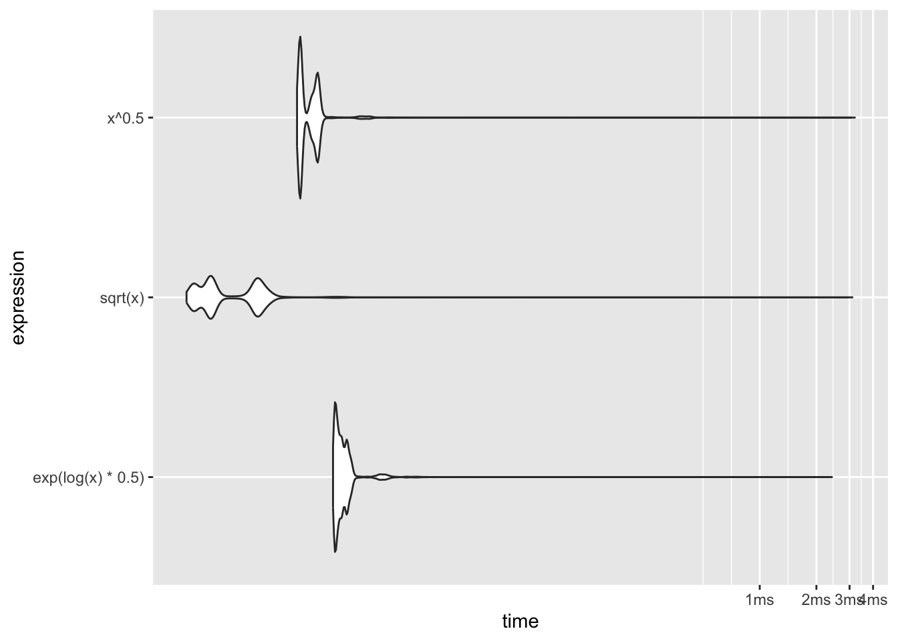
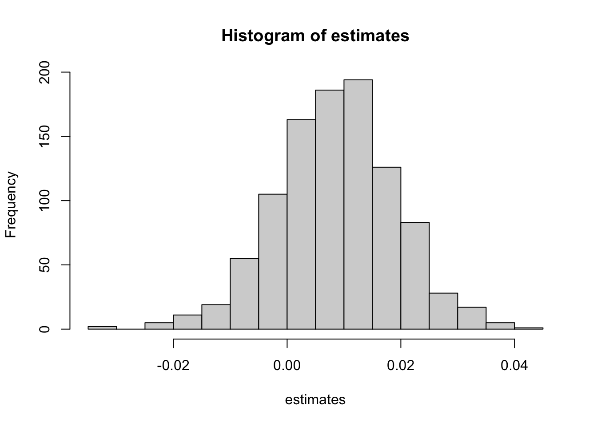
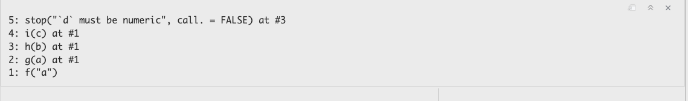

for (i in 1:200) { mad(rnorm(1000)) }8 Debugging in R
Debugging in the narrow sense is the finding and fixing of errors in the code. In the broader sense debugging are the activities that help us understand, analyze, improve, and fix code. This can take on many forms: analysis of log files, memory dumps, reading the code (!), control–flow analysis, profiling, debug messages, interactive debugging, and so on.
Profiling tools, for example, break down the time spent in a program by function calls, even down to individual lines of code. In order to optimize code for speed, you need to profile it first. You might be surprised where a program spends most of the execution time. To reduce run time you can then focus code optimization on those parts of the program.
All bugs are not created equal.
- Any defect related to security or data privacy is critical.
- In analytic software, wrong-number-bugs are critical bugs.
- The dreaded silent wrong-number-bug is the worst. When you compute an \(R^2\) and report it as 1,530 most educated users of the program would recognize this as an obvious bug since most everyone knows that \(0 \le R^2 \le 1\). Still, it is a bad bug. A silent wrong number bug is to compute the \(R^2\) as 0.75, when it should be 0.6. There is no indication to the user of the software that the reported number is incorrect.
8.1 Profiling
Profiling code gives you an idea of how much time is spent executing the lines of code. This sounds simple, but is actually quite tricky. First, you need to have a way of reliably measure time, and you need to distinguish different definitions of “time” on a computer. In most situations we are interested in wall-clock time, referring to the amount of time elapsed when the code execution is measured by taking the difference between the time of day just prior and after the run.
Measuring Execution Time
To time the code
we could wrap it in calls to Sys.time and take the difference:
st <- Sys.time()
for (i in 1:200) { mad(rnorm(1000)) }
diff <- Sys.time() - st
diffTime difference of 0.01855612 secsSys.time returns the absolute date and time of day, the precision is on the order of milliseconds but depends on the operating system. In order to measure execution time of code, it is recommended to use proc.time() instead, which measures the time the R process has spend on execution. proc.time() returns three numbers, the CPU time charged for the execution of the user instructions, the system time charged for execution by the system on behalf of the calling process, and the elapsed (wall-clock time).
proc.time() user system elapsed
0.337 0.031 0.391 Wrapping the loop timed previously with Sys.time with calls to proc.time results in the following:
st <- proc.time()
for (i in 1:200) { mad(rnorm(1000)) }
diff <- proc.time() - st
diff user system elapsed
0.017 0.000 0.017 You can simplify this operation by using system.time instead of proc.time. system.time makes calls to proc.time at the beginning and the end of the code execution and reports the difference:
system.time(for(i in 1:200) mad(rnorm(1000))) user system elapsed
0.016 0.000 0.016 Micro-benchmarking
Benchmarking is the comparison of code alternatives. Sometimes, one of the alternatives is an established set of tests or conditions against which a product is evaluated. TPC, for example, is a non-profit organization that establishes benchmark tests for databases. Right or wrong, if you develop a new database, eventually you will have to evaluate the database against the various TPC benchmarks.
More often benchmarking comes into play in evaluating alternative ways of accomplishing the same result. Which one is faster? Which one requires less memory? Does it matter? This form of benchmarking uses packages designed to evaluate code execution with sub-millisecond precision. One such package in R is microbenchmark. It gives a more accurate comparison than the frequently seen system.time(replicate(1000,expr)) expression. However, the package is not available for all versions of R. For example, it failed to install on my M2 Mac R 4.3.0. Another package is bench, which we will use here.
The idea of micro-benchmarking is to run a piece of code multiple times, either a fixed number of times or for a certain length of time and to describe the statistical properties of the run times (min, max, mean, std. deviation, median) as well as other characteristics (memory consumption, garbage collection, etc.).
Consider the following three approaches to compute the square root of the elements of a vector:
x <- rep(1,1000)
s1 <- sqrt(x)
s2 <- x^0.5
s3 <- exp(log(x) * 0.5)Mathematically, they are identical. Numerically, they are equivalent in the sense that they lead to the same answer within the limits of finite precision:
sum(s1-s2)[1] 0sum(s1-s3)[1] 0To see which of the three methods is fastest, we can run a micro-benchmark with bench:mark():
library(bench)
bm <- mark(
sqrt(x),
x^0.5,
exp(log(x)*0.5),
time_unit='us',
)
bm# A tibble: 3 × 6
expression min median `itr/sec` mem_alloc `gc/sec`
<bch:expr> <dbl> <dbl> <dbl> <bch:byt> <dbl>
1 sqrt(x) 0.902 1.23 619946. 7.86KB 62.0
2 x^0.5 3.53 3.69 245918. 7.86KB 24.6
3 exp(log(x) * 0.5) 5.45 5.90 166042. 7.86KB 33.2plot(bm, type="violin")

The time_unit='us' option requests that all times are reported in microseconds. If you do not specify this parameter, the times can be reported in different units for the code alternatives. By default, bench::mark runs each expression for at least (min_time=) 0.5 seconds and for up to (max_iterations=) 10,000 iterations.
The built-in sqrt function is faster than the power computation and much faster than exponentiation the logs.
The violin plot of the results shows that the distribution of the run times is heavily skewed to the right (Figure 8.1). Some individual function calls can exceed the majority of the calls by orders of magnitude—note that the horizontal axis of the plot is on the log scale! You should avoid benchmarking based on the mean run time and instead use the median run time.
Visual Profiler in RStudio
Wrapping code in system.time is convenient if you want to know the (user, system, elapsed) time for a chunk of code. Micro-benchmarking is helpful to evaluate alternative ways of writing expressions. To measure the performance of larger pieces of code, down to the level of function calls and individual lines of code we use a profiler.
To get a detailed analysis of how much time is spent on lines of user-written code, and how much memory is allocated/deallocated for those lines of code, you can use the profiler tool that is built into RStudio. You first need to load the profvis library, then wrap the code you wish to profile in a call to profvis({code-goes-here}). After the profiling run RStudio opens a window with two tabs. The flame graph provides a visual representation of the time spent in code execution, stacking functions that call each other. The Data tab provides a tabular breakdown—many users find that easier to comprehend than the flame graph.
The following example calls the profiler for code that computes the histogram, mean, and standard deviation of 1000 bootstrap samples of the trimmed mean in a sample of \(n=20,000\) observations from a \(G(0,2)\).
library(profvis)
profvis({
set.seed(542)
n <- 20000
x <- rnorm(n, mean=0, sd=sqrt(2))
bagger <- function(x,b=1000) {
n <- length(x)
estimates <- rep(0,b)
for (i in 1:b) {
# Draw a bootstrap sample
bsample <- sample(n,n,replace=TRUE)
# Compute the trimmed mean of the bootstrap sample
estimates[i] <- mean(x[bsample],trim=0.15)
}
# Compute mean and standard deviation of the estimator
mn = mean(estimates)
sdev = sd(estimates)
hist(estimates)
return (list(B=b, mean=mn, sd=sdev))
}
bagger(x,b=1000)
})
Each block in the flame graph represents a call to a function, or possibly multiple calls to the same function. The width of the block is proportional to the amount of time spent in that function. When a function calls another function, a block is added on top of it in the flame graph. Memory reported in the Data view shows allocated memory as positive values and deallocated memory as negative values (in megabytes).
The profiler is a great tool for long-running code, and can point you at opportunities for optimizing execution time. However, you need to be aware of how it works and the resulting issues:
The profiler samples the code. Every few milliseconds the profiler stops the interpreters and records which function call it is in and traces back through the call stack. You will get different results from run to run, depending on which lines of code and which functions are being sampled. The variability in profiling results affects the functions the most that execute quickly—they might get sampled once or a few times in one profiling run and might get skipped in another run. Fortunately, those are the functions of least interest in code optimization—you focus on the code where the program spends most of the time.
If your code runs fast, the profiler might not hit any lines of code. On the other hand, you should be able to reliably hit the long-running parts of the code with the profiler.
The profiler does not record some built-in R functions or code written in other languages. Many routines are calling into C, C++, or even Fortran code. The profiler records an overall time for that code, but does not provide a breakdown.
The call stack might appear to be in a reverse order from the code. This is because
Rs lazy execution model might call a routine only when it is needed, rather then where it is specified in the code.You might see a
GCentry in the profiler. This represents the garbage collector which frees resources no longer needed. Garbage collection is unpredictable, depends on the overall state of the system, and is also time consuming—it can throw off the profiling results if it occurs during a run. However, if you consistently find garbage collection in the profiling run, it can be a sign that the code is spending a lot of time freeing and reallocating memory. There will be corresponding memory allocations and this represents an opportunity to optimize the code to be more memory efficient. For example, instead of adding elements to lists inside a loop, pre-allocating the required memory and filling in the elements will trigger fewer reallocations of memory.
The following code adds elements to a list in a loop. R has to increase the size of the vector several times, leading to memory allocation and garbage collection (freeing) of previously allocated memory.
profvis({
x <- integer()
for (i in 1:10000) {
x <- c(x, i)
}
}
)You could achieve the same result with a single memory allocation and without garbage collection with this code
x <- rep(1,10000)If you fill values in a loop, pre-allocate the result vector to avoid garbage collection:
x <- integer(10000)
for (i in 1:length(x)) {x[i] = i}8.2 Tracebacks
A traceback is a listing of the call stack of the program. Tracebacks are helpful to see which functions were called when an error occurs. Consider the following example from “Advanced R” by Wickham (2019). Function f calls function g which calls function h and so forth.
f <- function(a) g(a)
g <- function(b) h(b)
h <- function(c) i(c)
i <- function(d) {
if (!is.numeric(d)) {
stop("`d` must be numeric", call. = FALSE)
}
d + 10
}When we call with a non-numeric argument, an error occurs.
f("a")Error: `d` must be numericIf you are in RStudio, you can now click the “Show Traceback” button next to the error message (Figure 8.2).
{kind=link}
Alternatively, you can see the traceback with the traceback() function.
traceback()
8.3 The Interactive Debugger
The RStudio IDE has an interactive debugging tool. Interactive debugging allows you to stop code execution at breakpoints, step through the code, interact with function evaluations, see and change the value of variables, and so forth. It is a valuable tool to find problems in programs and to learn how code works. It is highly recommended to step into the functions you frequently use and examine the code line by line—you learn a lot about how your favorite packages work.
Suppose you want to run a classification model using adaptive boosting on the banana quality data. This data set contains ratings of the fruit quality (Good, Bad) and fruit attributes such as size, weight, sweetness, etc., for 4,000 bananas.
library("duckdb")
con <- dbConnect(duckdb(),dbdir = "ads.ddb",read_only=TRUE)
ban_train <- dbGetQuery(con, "SELECT * FROM banana_train")
dbDisconnect(con)
head(ban_train) Size Weight Sweetness Softness HarvestTime Ripeness
1 1.706644 -0.03692624 -4.46344950 -1.51004720 4.5640225 -0.04171263
2 3.703947 1.11884890 -3.04337740 0.02899801 -0.9705806 -1.46996620
3 -3.888493 1.32609500 0.04608246 2.25944950 0.5068415 0.73710510
4 -3.052952 -0.58796227 -1.63466790 1.04902060 -0.2098602 -1.81881750
5 1.965954 -1.37867620 -3.14279270 -3.24607060 -0.6116899 1.81526600
6 2.306789 -3.69348800 -0.04255614 0.70101670 2.7060213 3.96723440
Acidity Quality
1 4.3266883 Good
2 -0.5881153 Good
3 2.5832198 Bad
4 3.9573660 Bad
5 -0.5000507 Bad
6 -0.9244213 GoodSuppose we want to debug the code for adaptive boosting in the ada package. The following statements load the library and invoke the ada::ada function on the banana training data. Prior to executing the code, execute debugonce(ada::ada) in the Console. This will set a breakpoint at the entry point of the function.
library(ada)
adab <- ada(Quality ~ .,
data=ban_train,
control=rpart.control(maxdepth=1, cp=-1, minsplit=0, xval=0)
)When the code above is executed, a browser window pops up when the breakpoint at ada::ada() is hit. The browser shows the R source code of the function and highlights the current line of the code (Figure 8.3). The frame of the Console window now shows five icons through which you can navigate the code (Figure 8.4).
{kind=link}
ada:ada entry point.
- Next (n): Execute the line of code and move to the next line
- Step Into (s): Step into the function called on the line you are on.
- Step Out (f): Run to the end of the current function (or loop) and step back out to the calling function
- Continue (c) : Stop interactive debugging and continue execution of the code
- Stop (Q): Stop interactive debugging and terminate execution of the code
{kind=link}
Figure 8.5 shows the result of stepping into the ada function. This brings you to the ada.formula function where the model expression is parsed. Advancing with several Next steps will land the cursor on the call to ada.default. If you now click on Step Into the source file for ada.default is loaded and you can advance through the function. If you click instead on Next, the call to ada.default function is completed and debugging resumes on line 22.
{kind=link}
ada.default.
During interactive debugging the Environment pane shows the values of the variables and objects in the code and the call stack (Figure 8.6).
{kind=link}
You can invoke the interactive debugger through other methods as well:
Setting a break point in the code by either clicking on the line number or with Shift-F9. I have found this method to not work reliably in .Rmd and .qmd documents. It does work in R scripts (.R files).
Invoking the
browser()command anywhere in the code.Using
debugordebugonce. The former sets a breakpoint that invokes the interactive debugger at every invocation of the function, until theundebugfunction removes the breakpoint.debugoncesets a breakpoint for single execution.
Debugging works on the interpreted R statements. Many functions call complied code in other languages, C and C++, for example. The interactive RStudio debugger cannot step through this compiled code.